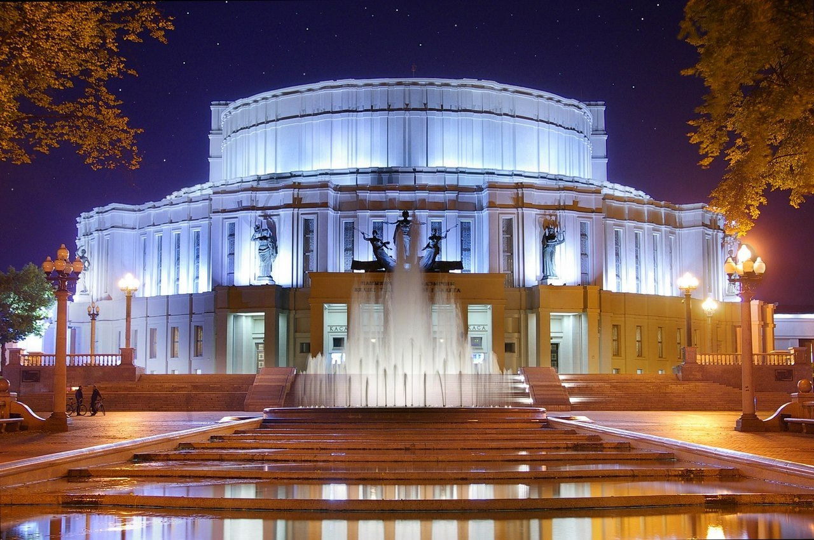

Театральная жизнь Минска
Национальный академический Большой театр оперы и балета Республики Беларусь

Государственный театр оперы и балета Белорусской ССР был создан на базе Государственной студии оперы и балета,
существовавшей в Минске в 1930—1933 годах, и открылся 25 мая 1933 года постановкой оперы «Кармен». Собственного
помещения у театра в то время не было, и вплоть до 1938 года все его спектакли проходили на сцене Белорусского
драматического театра.
В 1934 году началось масштабное строительство здания Минского оперного театра по проекту известного советского
архитектора И. Г. Лангбарда (в стиле советского конструктивизма). Строительство велось на месте снесённого
старейшего в городе Троицкого базара и продолжалось довольно долго — 5 лет, причём в 1937 году первоначальный план
был переработан в сторону уменьшения расходов и, соответственно, размеров здания[1]. Наконец, 10 марта 1938
состоялось открытие нового оперного театра в Минске.
В первые годы работы театра на сцене были поставлены оперы «Князь Игорь», «Евгений Онегин», «Пиковая дама», балет
«Лебединое озеро» и др.
В 1939—1940 годы на сцене театра были осуществлены постановки первых белорусских национальных опер — «Міхась
Падгорны» Е. К. Тикоцкого, «У пушчах Палесся» А. В. Богатырёва, «Кветка шчасця» А. Е. Туренкова и первый
национальный балет «Салавей» М. Е. Крошнера.
Первые деятели театра — Илья Гитгарц (художественный руководитель), Г. Н. Петров (дирижёр), О. М. Борисович
(режиссёр), Л. В. Крамаревский (балетмейстер); солисты пения — Л. П. Александровская, Р. В. Млодек, С. Ю. Друкер, И.
М. Болотин, М. И. Денисов; солисты балета — А. В. Николаева, Т. С. Узунова, Ю. В. Хераско, С. В. Дречин и др..
Театр во время войны
Во время немецкой оккупации 1941—1944 годов здание театра получило повреждения — в первые же дни Великой
Отечественной на него попала авиабомба, разрушив зрительный зал, представители оккупационной власти устроили в
полуразрушенном здании конюшни, а интерьеры и убранство театра разграбили и вывезли в Германию. Коллектив заведения
в это время находился в эвакуации в Горьком, где в местном оперном театре даже работала довольно значительная (50
человек) группа минских солистов; потом в Коврове.
После освобождения города советскими войсками (1944) театр был тщательно реконструирован и достроен, в частности,
появились ярусные балконы в зрительном зале. Во время восстановительных работ внутри здания использовались зарисовки
А. О. Бембеля. Реконструкция помещения минской оперы длилась три года и завершилась в 1948 году. Вокруг театра был
организован парк, также спроектированный Лангбардом. Коллектив же театра, вернувшийся сразу по освобождении Минска,
возобновив деятельность, некоторое время давал представления в Окружном Доме офицеров.
В 1947 году реконструированное здание театра было открыто премьерной постановкой одной из лучших национальных опер
«Кастусь Каліноўскі» Д. А. Лукаса, режиссер Б. А. Мордвинов, он же поставил там оперы: «Алеся» Тикоцкого (тоже в
1947), «Пиковая дама», «Риголетто» (обе в 1948), «Князь Игорь», «Проданная невеста» (обе в 1949), «Иван Сусанин»
(1950), «Тихий Дон» (1951), балеты «Князь-озеро» В. А. Золотарёва, «Красный цветок» Глиэр[2]. Довоенный репертуар
удалось полностью восстановить лишь 1949 году. В конце 1940-х — в 1950-х годов были осуществлены постановки,
вошедшие в золотой фонд белорусского оперного театра — балет «Князь-озеро» В. А. Золотарёва (1949), «Дзяўчына з
Палесся» Е. К. Тикоцкого (1953) и др., а также опер классического репертуара — «Борис Годунов», «Садко», «Иван
Сусанин» (1950), «Мазепа» и т. д. В 1955 году появился первый детский оперный спектакль «Марынка».
В течение 1967 года произошли новые реставрационные и строительные работы — в результате здание получило низкую
шлемоподобную крышу. В 1978 году проводилась новая реконструкция здания.
В Советском Союзе театр имел устойчивую репутацию одного из самых ярких и открытых к творческим поискам оперных
коллективов, за что в 1940 году получил звание «Большой» и был награждён орденом Ленина, а в 1964 — «академический»
[4].
В советское время в Минском оперном театре работали такие известные театральные деятели как дирижёры Онисим Брон,
Владимир Пирадов, Лев Любимов, Татьяна Коломийцева, Ярослав Вощак, Владимир Мошенский, Геннадий Проваторов,
Александр Анисимов; режиссёры Олег Моралев, Дмитрий Смолич, Юрий Юженцев, Семён Штейн, Вячеслав Цюпа, Маргарита
Изворска-Елизарьева; художники Сергей Николаев, Евгений Чемодуров, Евгений Лысик, Эрнст Гейдебрехт, Евгений Ждан,
Вячеслав Окунев.
Театр много гастролировал по городам СССР, в частности не раз выступал на самой престижной в Союзе сцене — в Большом
театре в Москве.
В 1989 году на сцене Оперного театра БССР была поставлена ставшая шедевром национальная опера «Дикая охота короля
Стаха» (по произведению В. С. Короткевича), получившая Государственную премию Белоруссии.
Деятельность театра в 1990-е годы обозначена непрерывным обогащением репертуара шедеврами классики, последующим
обращением к национальному материалу, продолжением творческих поисков.
В 1996 году в результате реорганизации единый театр разделился на самостоятельные структуры: оперы и балета.
Реконструкция театра осенью 2006 года
В 1996 году балет «Страсці» («Рагнеда») Мдивани-Елизарьева, посвящённый непростой судьбе полоцкой княгини Рогнеды
был удостоен Государственной премии Республики Беларусь, премии Международной ассоциации танца под эгидой ЮНЕСКО
«Бенуа де ля данс».
Последние крупные (сроком на 2 года) восстановительные работы в помещении минского оперного театра осуществлялись с
2006 года. В 2009 году после капитальной реконструкции помещения было принято решение вновь объединить труппы в
единый Национальный академический Большой театр оперы и балета.
За последние 15 лет (данные в начале 2010 года) коллектив театра побывал с гастролями в более чем 30 странах мира,
причём в некоторых из них неоднократно.